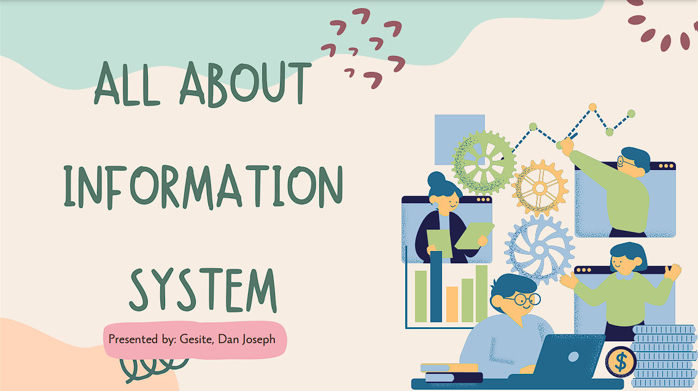

Data, the raw collection of measurements and observations, becomes valuable when processed into information, providing context for decision-making. This transformation is crucial for understanding trends, predicting outcomes, and making informed choices in fields like business, healthcare, and finance. Information systems are organized frameworks that collect, process, and distribute information. Evolving from Herman Hollerith's census tabulator to advanced systems, they support strategic planning, operational management, and efficient data handling, driving informed decisions and organizational success.
Click the Image to proceed